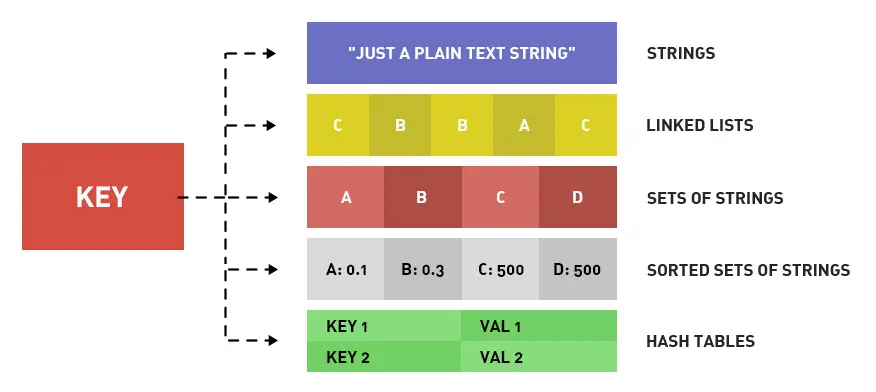

redis
Redis 是一个开源的使用 ANSI C 语言编写、遵守 BSD 协议、支持网络、可基于内存、分布式、可选持久性的键值对(Key-Value)存储数据库，并提供多种语言的 API。Redis 通常被称为数据结构服务器。
基本概念
- 介绍
Redis 是一个开源的使用 ANSI C 语言编写、遵守 BSD 协议、支持网络、可基于内存、分布式、可选持久性的键值对(Key-Value)存储数据库，并提供多种语言的 API。Redis 通常被称为数据结构服务器。 - 特点
- Redis支持数据的持久化，可以将内存中的数据保存在磁盘中，重启的时候可以再次加载进行使用。
- Redis不仅仅支持简单的key-value类型的数据，同时还提供string/list/set/zset/hash等数据结构的存储。
- Redis支持数据的备份，即master-slave模式的数据备份。
- 优势
- 性能极高 – Redis能读的速度是110000次/s,写的速度是81000次/s
- 丰富的数据类型 – Redis支持二进制案例的 Strings, Lists, Hashes, Sets 及 Ordered Sets 数据类型操作。
- 原子 – Redis的所有操作都是原子性的，意思就是要么成功执行要么失败完全不执行。单个操作是原子性的。多个操作也支持事务，即原子性，通过MULTI和EXEC指令包起来。
- 丰富的特性 – Redis还支持 publish/subscribe, 通知, key 过期等等特性。
- redis 的 key 只能是字符串
- redis 的 value 可以是如下
- String: 字符串
- List: 列表
- Set: 集合
- zset: 有序集合
- Hash: 散列
安装和启动
- 源码安装
1
2
3
4
5
6wget http://download.redis.io/releases/redis-5.0.14.tar.gz
tar xzf redis-5.0.14.tar.gz
cd redis-5.0.14
make
执行完 make 命令后，redis-5.0.14 的 src 目录下会出现编译后的 redis 服务程序
redis-server，还有用于测试的客户端程序 redis-cli - 启动
1
2
3
4cd src
./redis-server ../redis.conf
cd src
./redis-cli
配置
- 使用 * 号获取所有配置项
1
redis 127.0.0.1:6379> CONFIG GET *
- 使用 CONFIG SET 修改配置
1
redis 127.0.0.1:6379> CONFIG SET CONFIG_SETTING_NAME NEW_CONFIG_VALUE
- 主要配置
1
2
3
4
5
6
7
8databases # 设置数据库的数量，默认数据库为0，可以使用SELECT 命令在连接上指定数据库id
timeout # 当客户端闲置多长秒后关闭连接，如果指定为 0 ，表示关闭该功能
bind 127.0.0.1 # 绑定的主机地址
port 6379 # 指定 Redis 监听端口，默认端口为 6379
slaveof <masterip> <masterport> # 当本机为 slave，设置 master 服务的 IP 地址及端口，在 Redis 启动时，它会自动从 master 进行数据同步
requirepass foobared # 设置 Redis 连接密码，如果配置了连接密码
maxclients 128 # 设置同一时间最大客户端连接数，默认无限制
maxmemory <bytes> # 指定 Redis 最大内存限制，Redis 在启动时会把数据加载到内存中，达到最大内存后，Redis 会先尝试清除已到期或即将到期的 Key，当此方法处理 后，仍然到达最大内存设置，将无法再进行写入操作，但仍然可以进行读取操作。Redis 新的 vm 机制，会把 Key 存放内存，Value 会存放在 swap 区
基本命令
- 登陆
1
2
3/data/service/redis5/bin/redis-cli -h 127.0.0.1 -p 6378 -a 【密码】
redis-cli -h IP地址 -p 端口 -a 密码
--raw # 防止中文乱码，加上 - 验证密码是否正确/查看服务是否运行
1
2AUTH 【密码】 # 返回OK
PING # 返回PONG - 切换到指定的数据库（默认总16个数据库，当前0）
1
select 【index】
- 查看redis信息
1
info 【server】/【memory】
- 查看所有的key列表
1
keys * # *是通配符，可以是其他前后缀匹配
- 统计当前db下key数量
1
DBSIZE
- 查看key类型
1
type 【key】
- 判断key是否存在
1
exists 【key】
- 修改key名称
1
rename 【key】 【newkey】
- 查看key过期时间
1
2
3
4ttl 【key】 # 以秒返回
pttl 【key】 # 以毫秒返回
(integer) -1 # 无过期时间返回
(integer) -2 # KEY不存在返回 - 设置/清除key过期时间
1
2
3expire 【key】 3 # 设置3秒过期
pexpire 【key】 3 # 设置3毫秒过期
persist 【key】 # 移除 key 的过期时间，key 将持久保持。 - 设置和删除
1
2set 【key】 【value】
del 【key】 - 删除当前db/所有db的所有key
1
2flushdb
flushall - 批量删除key
1
2
3./redis-cli -h 127.0.0.1 -p 6379 -a【密码】keys a_* | xargs ./redis-cli -h 127.0.0.1 -p 6379 -a【密码】 del
<!-- redis是单线程，如果redis包含了大量的键，执行keys命令可能会造成redis阻塞，所以一般建议不要在生产环境下使用keys，使用scan命令渐进式的遍历所有键，可以有效防止阻塞。 -->
./redis-cli -h 127.0.0.1 -p 6379 -a【密码】--scan --pattern 'a_*' | xargs ./redis-cli -h 127.0.0.1 -p 6379 -a【密码】del
数据类型
- string
string 是 redis 最基本的类型，一个 key 对应一个 value。1
2
3
4
5set 【key】【value】 # 设置
get 【key】 # 获取字符串
strlen 【key】 # 获取字符串长度
del 【key】 # 删除
string 类型的值最大能存储 512MB - hash
hash 是一个 string 类型的 field 和 value 的映射表，1
2
3
4
5
6
7
8
9hset【key】 A 'a' B 'b' # 设置
hget 【key】A / hget 【key】B # 获取单个
hgetall 【key】 # 获取所有键值对，其中奇数为filed值,偶数为对应的value值
hlen 【key】 # 获取hash键值对数量
hkeys 【key】 # 获取所有key
hvals 【key】 # 获取所有val
del 【key】 # 删除
hdel 【key】【field】 # 删除hash中某个字段及其值
每个 hash 可以存储 2^32 -1 键值对（40多亿） - list
list 是简单的字符串列表，按照插入顺序排序。你可以添加一个元素到列表的头部（左边）或者尾部（右边）。1
2
3
4
5
6
7
8
9rpush 【key】 a # 右插入
lpush 【key】 b # 左插入
lset 【key】 【index】 "del" # 替换列表第index的原始
lindex 【key】【index】 # 查看列表指定index的元素
lrange 【key】 0 1 # 查看列表所有元素
llen 【key】 # 查看列表元素个数
del 【key】 # 删除列表
lrem 【key】0 "value" //从key中删除全部等值value的元素 0为全部，负值为从尾部开始
列表最多可存储 2^32 - 1 元素 (4294967295, 每个列表可存储40多亿) - set
Set 是 string 类型的无序集合。1
2
3
4
5
6sadd 【key】 # 插入集合元素
scard 【key】 # 集合元素个数
smembers 【key】 # 查看集合元素
del 【key】 # 删除集合
srem 【key】【元素1】 【元素2】 # 删除集合一个或多个成员元素，不存在的成员元素会被忽略
集合中最大的成员数为 232 - 1(4294967295, 每个集合可存储40多亿个成员) - zset
zset 和 set 一样也是string类型元素的集合,且不允许重复的成员。
不同的是每个元素都会关联一个double类型的分数。redis正是通过分数来为集合中的成员进行从小到大的排序。
zset的成员是唯一的,但分数(score)却可以重复1
2
3
4
5
6
7
8
9
10
11
12
13zadd 【key】【score1】 【元素1】 【score2】 【元素2】 # 插入或更新集合元素分值
zcard 【key】 # 集合元素个数
zcount 【key】【min】【max】 # 计算有序集合中元素个数
ZRANGE key start stop # 通过索引区间返回有序集合指定区间内的成员
zrange 【key】 0 -1 # 查看所有原素
ZRANGEBYLEX 【key】【min】【max】 # 通过字典区间返回有序集合的成员
ZRANGEBYSCORE 【key】【min】【max】 # 通过分数返回有序集合指定区间内的成员
ZSCORE 【key】 【member】 # 返回有序集中，成员的分数值
del 【key】 # 删除集合
ZREM【key】【member】 [member ...] # 移除有序集合中的一个或多个成员
集合中最大的成员数为 232 - 1(4294967295, 每个集合可存储40多亿个成员)
内存碎片
基本参数名
- mem_fragmentation_ratio = used_memory_rss/ used_memory
内存碎片率 - used_memory_rss
操作系统实际分配给Redis的物理内存空间 - used_memory
Redis为了保存数据实际申请使用的空间 - 如何清理内存碎片
- 重启Redis实例
- 如果Redis中的数据没有持久化，那么，数据就会丢失；
- 即使Redis数据持久化了，我们还需要通过AOF或RDB进行恢复，恢复时长取决于AOF或RDB的大小，如果只有一个Redis实例，恢复阶段无法提供服务。
- 从4.0-RC3版本以后，Redis自身提供了一种内存碎片自动清理的方法
- Redis需要启用自动内存碎片清理
config set activedefrag yes - 具体什么时候清理，会受到下面这两个参数的控制
- active-defrag-ignore-bytes 100mb
表示内存碎片的字节数达到100MB时，开始清理； - active-defrag-threshold-lower 10
表示内存碎片空间占操作系统分配给Redis的总空间比例达到10%时，开始清理。
- active-defrag-ignore-bytes 100mb
- 为了尽可能减少碎片清理对Redis正常请求处理的影响，自动内存碎片清理功能在执行时，还会监控清理操作占用的CPU时间，而且还设置了两个参数，分别用于控制清理操作占用的CPU时间比例的上、下限，既保证清理工作能正常进行，又避免了降低Redis性能。这两个参数具体如下：
- active-defrag-cycle-min 25
表示自动清理过程所用CPU时间的比例不低于25%，保证清理能正常开展； - active-defrag-cycle-max 75
示自动清理过程所用CPU时间的比例不高于75%，一旦超过，就停止清理，从而避免在清理时，大量的内存拷贝阻塞Redis，导致响应延迟升高。
- active-defrag-cycle-min 25
- Redis需要启用自动内存碎片清理
- 重启Redis实例
面试
- 什么是Redis？
- Redis 是一种基于内存的数据库，因此读写非常快，常用作缓存、消息队列、分布式锁等场景。
- Redis 提供多种数据类型：String(字符串)、Hash(哈希)、List(列表)、Set(集合)、Zset(有序集合)、Bitmaps(位图)、HyperLogLog(基数统计)、GEO(地理信息)、Stream(流)。并且对数据类型的操作都是原子性的，因为执行命令是单线程负责，不存在并发竞争问题。
- Redis 还支持事务、持久化、Lua脚本、多种集群方案（主从复制、哨兵模式、切片机群模式）、发布/订阅模式、内存淘汰机制、过期删除机制等。
- Redis 和 Memcached 有什么区别？
- 相同点
- 都是基于内存的数据库，一般都用来当做缓存使用。
- 都有过期策略。
- 两者的性能都非常高。
- 不同点
- Redis 支持的数据类型更丰富（String、Hash、List、Set、ZSet），而 Memcached 只支持最简单的 key-value 数据类型；
- Redis 支持数据的持久化，可以将内存中的数据保持在磁盘中，重启的时候可以再次加载进行使用，而 Memcached 没有持久化功能，数据全部存在内存之中，Memcached 重启或者挂掉后，数据就没了；
- Redis 原生支持集群模式，Memcached 没有原生的集群模式，需要依靠客户端来实现往集群中分片写入数据。
- Redis 支持发布订阅模型、Lua 脚本、事务等功能，而 Memcached 不支持；
- 相同点
- 为什么用 Redis 作为 MySQL 的缓存？
- 主要是因为 Redis 具备「高性能」和「高并发」两种特性。
- 高性能：访问 MySQL 数据是从硬盘读取，比较慢。而数据缓存在redis中，就是直接读取内存，速度非常快。
- 高并发：单台设备的redis的qps是mysql的10倍，能轻松突破10w，而mysql单机很难突破1w。
- Redis 数据类型以及使用场景分别是什么？
- Redis 提供了丰富的数据类型，常见的有五种数据类型：String（字符串），Hash（哈希），List（列表），Set（集合）、Zset（有序集合）。 
- 应用场景
- String 类型的应用场景：缓存对象、常规计数、分布式锁、共享 session 信息等。
- List 类型的应用场景：消息队列（但是有两个问题：1. 生产者需要自行实现全局唯一 ID；2. 不能以消费组形式消费数据）等。
- Hash 类型：缓存对象、购物车等。
- Set 类型：聚合计算（并集、交集、差集）场景，比如点赞、共同关注、抽奖活动等。
- Zset 类型：排序场景，比如排行榜、电话和姓名排序等。
- 五种常见的 Redis 数据类型是怎么实现？
Reference
------------->本文结束感谢您的阅读-------------